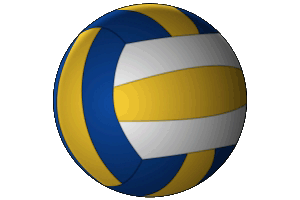

Volleyball is a team sport played by two teams on a playing court divided by a net. In this instance, the 'court' is referring to an area on a beach.
Originating in the United States, this sport is now ranking behind soccer in world popularity with the player base being about 800 million players participating in Volleyball at least once a week.
The game's objective is for both teams to send the ball regularly over the net to ground it on the opponent's court, while preventing the ball from being grounded on their own court. The game starts with the ball being put into play by the right back-row player who serves the ball by hitting it over the net to the opponent's court. A team is allowed to hit the ball three times (in addition to the block contact) to return it to the opponent's court. A player is not allowed to hit the ball twice consecutively, except when attempting a block. The rally continues until the ball touches the ground/floor, goes 'out' or a team fails to return it to the opponent's court or commits a fault.
The team winning a rally scores a point (Rally Point System). When the receiving team wins a rally, it gains a point and the right to serve, and its players rotate one position clockwise, cycling positions and giving everyone a go at everything.
The best of three or best of five games will win matches. Each non-deciding game will be won by the team that first scores 25 points with a minimum two-point advantage (no scoring cap). If there is a deciding game, it will be won by the team that first scores 15 points with a minimum two-point advantage (no scoring cap).